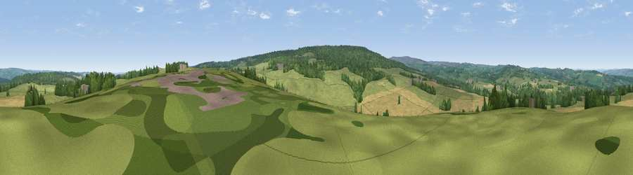

Viewpoint near Slaley
#17055 in England · top 41% of its area beats it · near Slaley · access?Where it is
The exact computed spot (NY 95725 57975). Click the marker for map links.
Public access: no public right of way or access land is recorded at this exact spot — it may be on private land. Computed from Natural England's CRoW access layer and OpenStreetMap rights of way — not the legal definitive map. Always verify locally.
The view, rendered

A 360° render of this exact spot computed from the terrain model, tree cover and land cover — summer colours, afternoon light, calibrated against photographs of famous viewpoints. Real trees, hedges and buildings will differ in detail.
The panorama
Grey silhouette: terrain skyline in each direction (720 bearings, Earth curvature and refraction included). Dashed green: skyline with trees (+15 m) and buildings (+8 m) as obstacles. Blue strip: how far the ground is visible on each bearing.
Where the view opens
Wedge length = distance to the farthest visible ground on that bearing (vegetation-aware). Rings at 10, 25 and 50 km.
What fills the view
55% grassland · 24% woodland · 20% cropland ·
Angular shares of the visible panorama (visual magnitude), not map area. Landscape diversity 0.44 (0–1 Shannon).
Key numbers
More beautiful places nearby
The staircase of upgrades: each row has a higher view potential than everything closer. Driving times are estimates from straight-line distance, calibrated against real road routing — check an actual route before setting out.
| Place | Direction | Drive | Score |
|---|---|---|---|
| Viewpoint near Whitley Chapel | SSW · 3 km | ~7 min | 60.7 |
| Viewpoint near Blanchland | SSW · 5 km | ~10 min | 67.7 |
| Viewpoint near Slaley | ESE · 6 km | ~12 min | 69.8 |
| Viewpoint near Fourstones | NNW · 11 km | ~21 min | 71.4 |
| Viewpoint near Hedley on the Hill | E · 14 km | ~26 min | 71.5 |
| Viewpoint near Greenside | E · 17 km | ~29 min | 74.2 |
| Viewpoint near Allenheads | SW · 19 km | ~32 min | 74.6 |
| Pontop Pike | ESE · 20 km | ~34 min | 77.8 |
54.91646, -2.06822 · source: screening · position refined by local search. Computed location — check access rights before visiting.